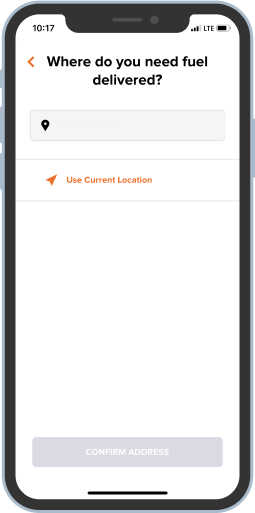
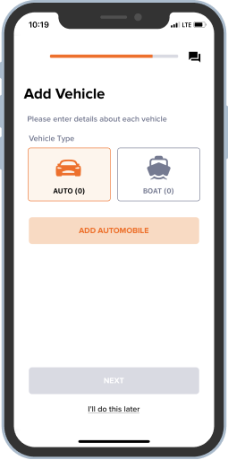
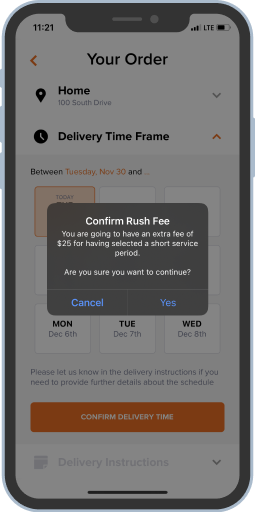

An on-demand fuel delivery app was losing users — but nobody knew why.
A heuristic evaluation of EzFill's mobile application, identifying critical usability violations and delivering actionable recommendations to the client.
UX Designer (team of 4)
Heuristic evaluation, Nielsen's 10 heuristics, accessibility audit
Figma
Prioritized findings report + client presentation
Background
EzFill is a mobile fuel delivery service that lets users order gas refills for their vehicles anywhere. As the company prepared to expand beyond its initial market, they needed confidence that their app could scale without frustrating new users.
Our team was brought in to evaluate the application's usability and accessibility — identifying friction points before they became growth blockers.
Process
Mapped critical user flows and distributed them across team members
Conducted screen-by-screen analysis against Nielsen's 10 heuristics
Prioritized findings by severity and user impact
Compiled recommendations and presented to the client
Key Findings
We identified 15+ usability violations across the app. Here are the three most impactful ones.
Confusing first screen breaks user expectations
The sign-up flow opens with a "Location" screen — an unexpected first step that's inconsistent with how most apps onboard. Users didn't understand why they were being asked for their location before even creating an account. The grey CTA button also failed contrast requirements.
Reword the title to explain the app is checking service availability. Move location to a contextually appropriate step. Use darker button colors that pass AA contrast, and left-align titles for scannability.

The app's most important action was nearly invisible
"Add Vehicle" is the primary action in the app — nothing works without it. Yet the "+" button was small, colorless, and overshadowed by the logo. Users couldn't figure out how to get started.
Make the add button orange (matching the app's action color), add the words "Add Vehicle," and position it prominently below the promotion banner. The primary action should be unmissable.

Ambiguous confirmation dialogs created doubt
The order confirmation pop-up asked two questions at once and used vague "Yes/No" buttons. Users couldn't tell what would happen when they tapped — especially risky for an action involving payment.
Replace "Yes/No" with clear action verbs ("Confirm Order" / "Go Back"). Remove the redundant second question. Users should never have to guess what a button does on a confirmation screen.

Recurring Patterns
Beyond individual screens, we surfaced systemic issues across the app:
- Color contrast failures on multiple screens (orange-on-white, grey-on-white)
- Inconsistent error message styling — different colors, positions, and icons across flows
- Mixed list layouts (some divided by lines, some not) breaking visual unity
- Inconsistent title alignment and placement across pages
These patterns pointed to a lack of a unified design system — a foundational recommendation we included in our report.
Outcome
We delivered a comprehensive findings report and presented it directly to the EzFill team. The client implemented several of our recommendations — their product now shows improved accessibility and visual consistency across key flows.
What I Took Away
This project reinforced that the biggest usability problems often aren't about aesthetics — they're about structure. A misplaced screen in a flow or an invisible primary action costs more than a bad color choice. Evaluating someone else's product sharpened my ability to separate personal preference from genuine usability issues grounded in principles.